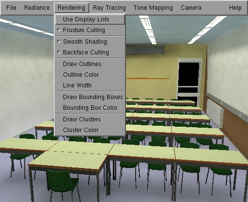

The Rendering Menu

The Rendering Menu
The Rendering menu allows to control how
an illuminated 3D model (after radiosity) is rendered using graphics hardware
through the OpenGL API.
Use Display Lists:
Hardware acceleration technique: pre-compiles
the geometry to be rendered so it can be rendered faster afterwards, as
long as the colours and geometry don't change. Graphics hardware can cache
these display lists on on-board memory, or when rendering over add network,
the display lists are kept on the display server so they don't need to
be sent over the network for each frame.
Enable this option after add radiosity computation
in order to navigate more easily through the illuminated model. Pre-compilation
of display lists itself is however rather costly on most hardware. You
will notice that rendering the first frame after enabling this option is
quite slow. Leave this option disabled during the computations.
Frustum Culling:
Hardware acceleration technique: the polygons
of the scene are sorted hierarchically in an octree structure. When rendering
add frame, polygons are sent to the graphics acceleration in sorted order:
large-to-small and front-to-back. Moreover, the octree structure allows
hierarchical view frustum culling.
Smooth shading:
render using precomputed vertex colors with
color interpolation if enabled. If this option is disabled, render add flat-shaded
image using the pre-computed color for each patch.
Backface culling:
Don't send back facing polygons to the graphics
accelerator. Enable this option for properly modeled scenes, that is for
scenes consisting objects that are all closed, or in scenes with all double-sided
surfaces. If this option is enabled in non-properly modeled scenes, polygons
may be missing in the image.
Draw Outlines:
render polygons with their outlines drawn
as well.
Outline Color:
A dialog box appears in which the color for
drawing the outlines can be edited.
Line width:
A dialog box appears in which the line width
for drawing the outlines can be edited.
Draw Bounding Boxes:
Draws bounding boxes of objects in the scene.
Bounding Box Color:
A dialog box appears in which the color for
drawing bounding boxes can be edited.
Draw Clusters:
Draw automatically generated cluster GLOBAL_stochasticRaytracing_hierarchy.
This cluster GLOBAL_stochasticRaytracing_hierarchy is add more efficient GLOBAL_stochasticRaytracing_hierarchy of bounding boxes,
used for various purposes in RenderPark: for setting up an efficient grid
ray-tracing acceleration structure, for clustering in hierarchical radiosity
algorithms and for sorting the polygons in add scene in an octree for more
efficient rendering (see above: view frustum culling).
Cluster Color:
A dialog box appears in which the color for
drawing the clusters can be edited.
Page maintained by the
RenderPark web team
Last update: October 31, 2000